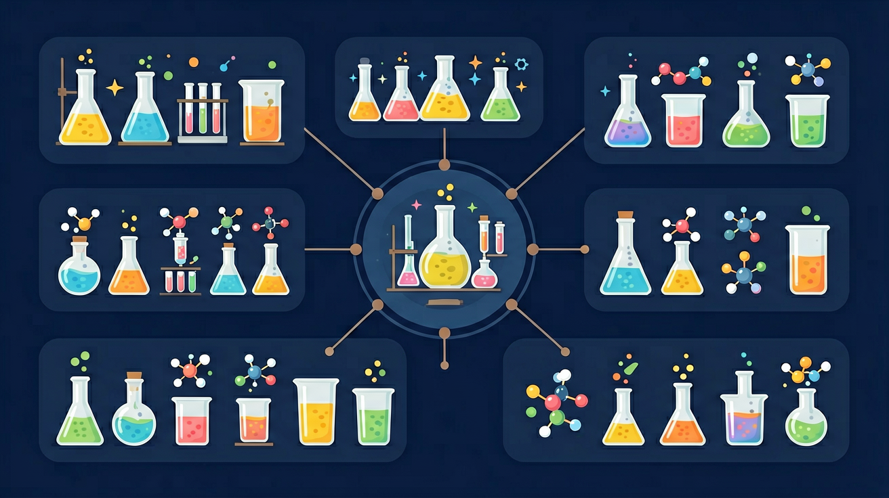
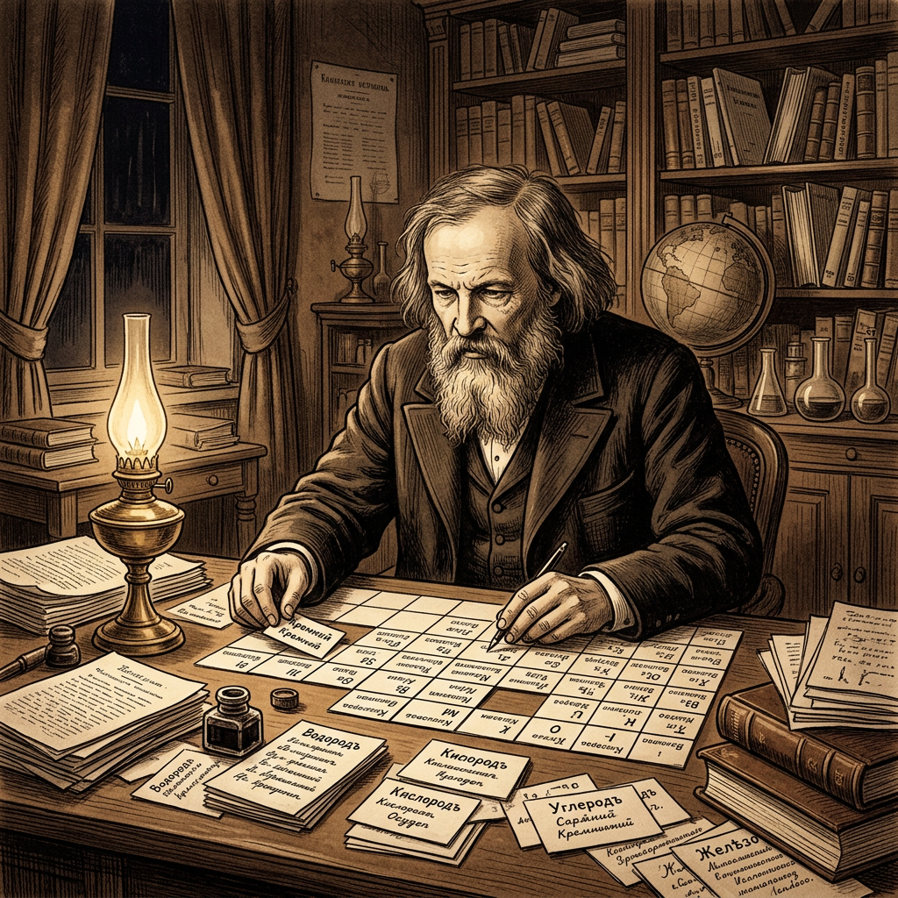

化学世界的"地图"
原子的最外层电子数决定了什么？
钠原子(Na)核外电子排布为 2-8-1，它有几个电子层？最外层几个电子？
1. 元素周期表是根据什么原则排列元素的？
2. 元素周期表中，同一周期的元素有什么共同特点？
3. 在元素周期表中，从左到右，元素的什么性质呈现周期性变化？
请根据你的回答情况，自评你对元素周期表的了解程度：
食盐是钠和氯的化合物，手机芯片里有硅，医院造影用钡——这些元素性质各异。
但为什么把118种元素排成这样一张表？同一列为什么性质相似？怎么用周期表预测未知元素？
因此要理解元素周期表的编排依据（原子序数=质子数），掌握族和周期的概念，学会用周期律预测元素性质。
💡 构建不同元素的原子，观察质子数→电子层→最外层电子数的变化，直观理解周期律。
And：你已认识很多元素——氢、氧、铁、铜……
But：100多种元素散落各处，找不到规律，像一座没有地图的城市。
Therefore：门捷列夫发明了"化学地图"——元素周期表，让所有元素各就各位。
🎯 你是化学探险家，今天要学会读这张"地图"！
元素周期表按原子序数（=质子数=核电荷数）从左到右、从上到下递增排列。
🔑 原子序数 = 质子数 = 核外电子数（三胞胎）
1869年，门捷列夫在排列元素时发现规律，并在表中预留空位。他预言了"类铝""类硅"等元素的存在和性质——后来这些元素（镓、锗）真的被发现了！
🔧 半导体材料硅和锗在同一族，它们的导电特性正是从周期表位置推断出来的。
看见它：在周期表中点击第ⅠA族的 Li、Na、K，观察它们最外层都是1个电子。
比较它：Na 和 Mg 都在第三周期，Na 最外层1个电子（活泼金属），Mg 最外层2个电子（不如 Na 活泼）。
迁移它：如果你发现一种新元素最外层7个电子，它最可能是什么性质？（非金属，容易得到1个电子）
点击任意元素查看详情，观察横行和纵列的规律。
👆 点击上方周期表中的元素查看详情
碳(C)：第___周期，第___族
钠(Na)：第___周期，第___族
氩(Ar)：第___周期，第___族
看看第ⅠA族：锂(Li)、钠(Na)、钾(K)——都是活泼金属，都能与水剧烈反应。
再看第ⅦA族：氟(F)、氯(Cl)——都是活泼非金属。
🔑 最外层电子数相同 → 化学性质相似！
同族元素最外层电子数相同，最外层电子数决定化学性质。
所以：最外层电子数相同 → 得失电子趋势相同 → 化学性质相似
⚠️ 常见错误：同族≠相同！K 比 Na 更活泼——从上到下金属性增强。
⚠️ 易错诊断：同族元素最外层电子数相同→性质「相似」，但从上到下原子半径增大，K 比 Na 更容易失去电子，所以更活泼。不要把「相似」等同于「相同」！

锂钠钾的共同点（最外层电子数）：___
差异点（原子半径从上到下）：___
我的发现：___
下列哪组元素化学性质最相似？
同周期（同一横行）：电子层数相同，从左到右最外层电子数递增。
🔑 同周期从左到右：金属性减弱，非金属性增强
⚠️ 易错诊断：周期序号=电子层数（不是最外层电子数！），族序号=最外层电子数。第三周期元素有3层电子，最外层从1到8不等。
Na(活泼金属) → Mg → Al → Si(准金属) → P → S → Cl(活泼非金属) → Ar(稳定)
🖱️ 点击上方周期表中第三周期元素，观察最外层电子数变化！
同周期元素从左到右，下列正确的是：
分析：氮(N)位于第二周期第ⅤA族，磷(P)位于第三周期第ⅤA族。
运用所学规律归纳：它们为什么化学性质相似？哪个非金属性更强？为什么？
门捷列夫在周期表中预留空位，成功预言了镓、锗等未发现的元素！
你也能做预测：知道位置，就能推测性质。
X元素位于第三周期第ⅦA族：
第三周期→有___个电子层；ⅦA族→最外层___个电子；>4→容易___电子→是___元素
Y元素位于第二周期第ⅠA族，判断Y的化学性质。
提示：从周期数推断电子层数，从族数推断最外层电子数。
某元素原子核外有3个电子层，最外层6个电子。判断其位置、金属性质、化学性质特点。
1. 说出周期序号和族序号分别对应什么。
2. 找到氧(O)和硫(S)，说明它们为什么化学性质相似。
门捷列夫预言"类硅"元素。已知硅(Si)位于第三周期ⅣA族，"类硅"位于第四周期ⅣA族，推测其性质与硅相比如何。
选择一种常用药（补铁剂/补钙剂/补锌剂），查阅有效成分的元素在周期表中的位置，用"结构决定性质"解释其作用。
And：元素周期表是化学学科的基石，它不仅展示了所有已知元素的有序排列，还揭示了元素之间的内在联系和变化规律。
But：面对看似复杂的周期表结构和元素性质变化，许多学生感到困惑，难以理解其背后的科学原理和应用价值。
Therefore：学习元素周期表将帮助你预测元素性质、理解化学反应本质、掌握物质变化规律，为后续化学学习和科学研究打下坚实基础，同时培养你的科学思维和问题解决能力。
And：元素周期表包含大量信息，直接记忆所有元素既困难又低效。
But：通过系统的方法理解周期表的规律和原理，可以事半功倍。
Therefore：建议采用下面的"五步学习法"。
And：元素周期表不仅是教科书上的理论知识，更是理解我们周围世界的重要工具。
But：许多学生难以将抽象的周期表
错误理解：认为同一周期的元素化学性质相似。 ✅正确理解：同一周期的元素电子层数相同，但最外层电子数不同，因此化学性质差异较大。同一族的元素最外层电子数相同，化学性质相似。例如，第1IA族的锂(Li)、钠(Na)、钾(K)都是活泼金属，具有相似的化学性质。 错误理解：认为从左到右，金属性逐渐增强，非金属性逐渐减弱。 ✅正确理解：从左到右，由于核电荷数增加，原子半径减小，金属性逐渐减弱，非金属性逐渐增强。例如，钠(Na)是活泼金属，而氯(Cl)是非金属。 错误理解：认为过渡金属元素的性质变化规律与主族元素相同。 ✅正确理解：过渡金属元素（如铁、铜、锌等）位于周期表中部，它们的d轨道电子参与成键，导致性质变化较为复杂，不像主族元素那样呈现明显的周期性变化。过渡金属通常具有多种化合价和良好的催化性能。 错误理解：认为稀有气体元素（如氦、氖、氩）完全不参与化学反应。 ✅正确理解：稀有气体元素的最外层电子层已达到稳定结构（8个电子，氦为2个），因此化学性质极不活泼。但在特定条件下，某些稀有气体可以形成化合物，如氙(Xe)可以与氟形成XeF₂等化合物。 追问链： 记忆技巧：将周期表想象成一座建筑，周期是楼层，族是房间。同一楼层的房间（周期）有不同的功能（性质），而同一列的房间（族）有相似的功能（性质）。 具体证据/现象：观察元素周期表，你会看到7个横行（周期）和18个纵列（族）。每个元素都有独特的符号、原子序数、原子质量和电子排布。例如，钠(Na)位于第3周期第IA族，原子序数为11，原子质量约为23。 要素分解：元素周期表由以下关键要素构成： 因果机制：元素周期表按照原子序数递增排列，元素性质的周期性变化源于原子核外电子排布的规律性。同一周期的元素，电子层数相同，从左到右最外层电子数依次增加，导致元素性质呈现规律性变化。同一族的元素，最外层电子数相同，因此化学性质相似。 与相关概念对比： 新场景应用： 同一纵列的元素化学性质相似，原因是： X位于第三周期第ⅦA族，正确的是： 下列说法正确的是： 1. 根据元素周期表，下列元素中，哪一种最可能与钠(Na)具有相似的化学性质？ 2. 在元素周期表中，从左到右，下列哪种性质是逐渐增强的？ 3. 某元素位于元素周期表第4周期、第VIIA族，该元素最可能具有什么性质？ 1. 在元素周期表中标出碱金属元素、卤素和稀有气体的位置。 2. 列出元素周期表中前20个元素的名称和符号。 3. 解释为什么同一周期的元素从左到右原子半径逐渐减小。 1. 根据元素在周期表中的位置，预测铝(Al)和硫(S)可能形成的化合物类型。 2. 比较钠(Na)和氯(Cl)的原子结构，解释它们为什么容易形成离子化合物NaCl。 3. 设计一个实验，验证同一族元素化学性质的相似性。 1. 分析元素周期表中过渡金属元素的性质特点，并解释为什么它们在工业催化中有重要应用。 2. 探讨元素周期表的历史演变，从门捷列夫到现代周期表的变化及其科学意义。 3. 思考：如果元素周期表按照原子质量而非原子序数排列，会对元素性质的预测产生什么影响？ atomic-structure。先确认这些基础是否能说清楚，否则回到前测补洞。 chem-m-periodic-table：元素周期表。抓住定义、条件、典型模型和反例。 把本课方法迁移到新材料、新数据或新情境中，形成可复用的解题/解释框架。 拖动或点击画布中的节点，观察「前置知识—核心概念—真实应用—易错诊断」之间的关系。这个画布不是装饰，而是把本课知识组织成可操作的学习路线。⚠️ 常见错误与诊断反馈
🔴典型错误1：周期与族的混淆
🔴典型错误2：元素周期性变化规律理解错误
🔴典型错误3：过渡金属元素的特殊性认知不足
🔴典型错误4：稀有气体元素的特性误解
🧠 记忆锚点
🔍 深层理解：五镜头法解读元素周期表
👁️看见它
🔧拆开它
💡解释它
⚖️比较它
🚀迁移它
📌 课堂小结
核心知识回顾
📝 后测
第 1 题
第 2 题
第 3 题
📝 后测：你真的理解了吗？
🎯 分层任务
基础任务
应用任务
挑战任务
🗺️ 知识图谱：从前置到迁移
① 前置知识
② 核心节点
③ 后续迁移
🧪 互动探究画布 · 马上练
🗺️ 知识图谱：元素周期表